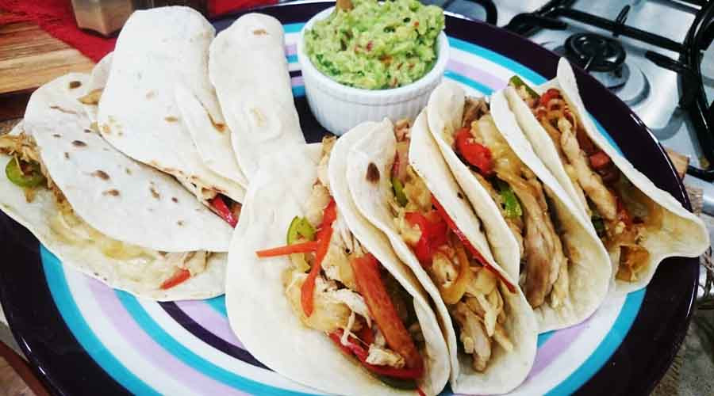

Tacos de pollo
Menú
Modo de preparación
- Cortar a modo juliana la cebolla, los pimientos y zanahorias.
- cortar en pequeños trozos las pechugas de pollo y reservar.
- En una olla calentar el aceite y reahogar a fuego medio las verduras previamente cortadas . Salpimentar y condimentar a gusto
- Una vez doradas las verduras, colocar el pollo previamente salpimentado y dejar cocinar a fuego medio con tapa colocada.
- Calentar tapas para tacos en una sarten 30 seg. de cada lado y reservar. Una vez cocinado el pollo con las verduras dejar enfriar 5 min. y servir.
